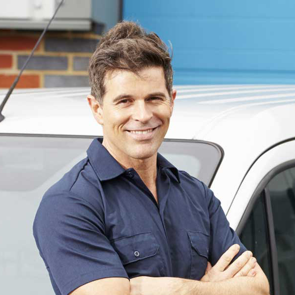

John Smith - Locksmith
It's well known to all in the locksmith industry that the competition is pretty rough. I was already aware that a website was a necessity but on top of that your customers also need to find you on websites such as Google. How to do that? I had absolutely no clue. A friend of mine recommended me JACS and they truly delivered. They started off with building me a beautiful website. Then they set up tools like Google My Business and put some advertisements on Google Ads. As soon as the SEO rankings of my website rose I had to spend less and less on paying ads. All of this wouldn't be possible without the help of the team of JACS. Thanks!